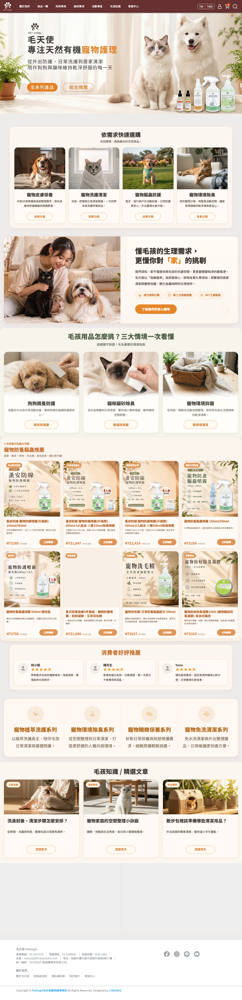
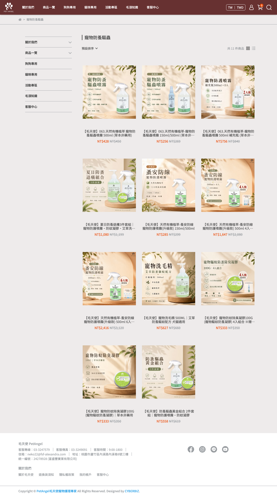
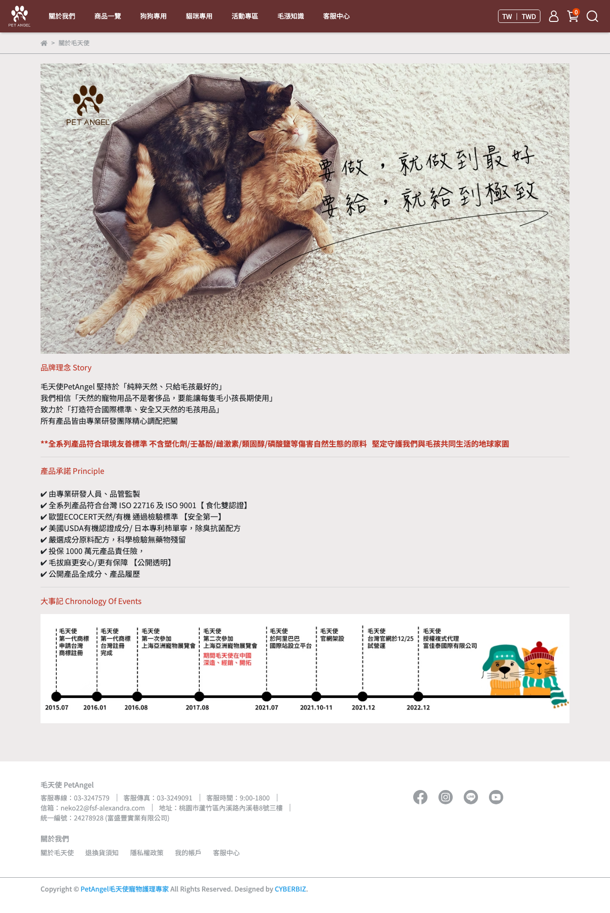
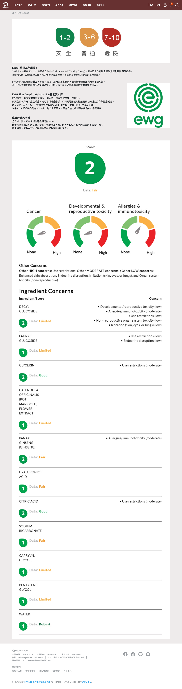
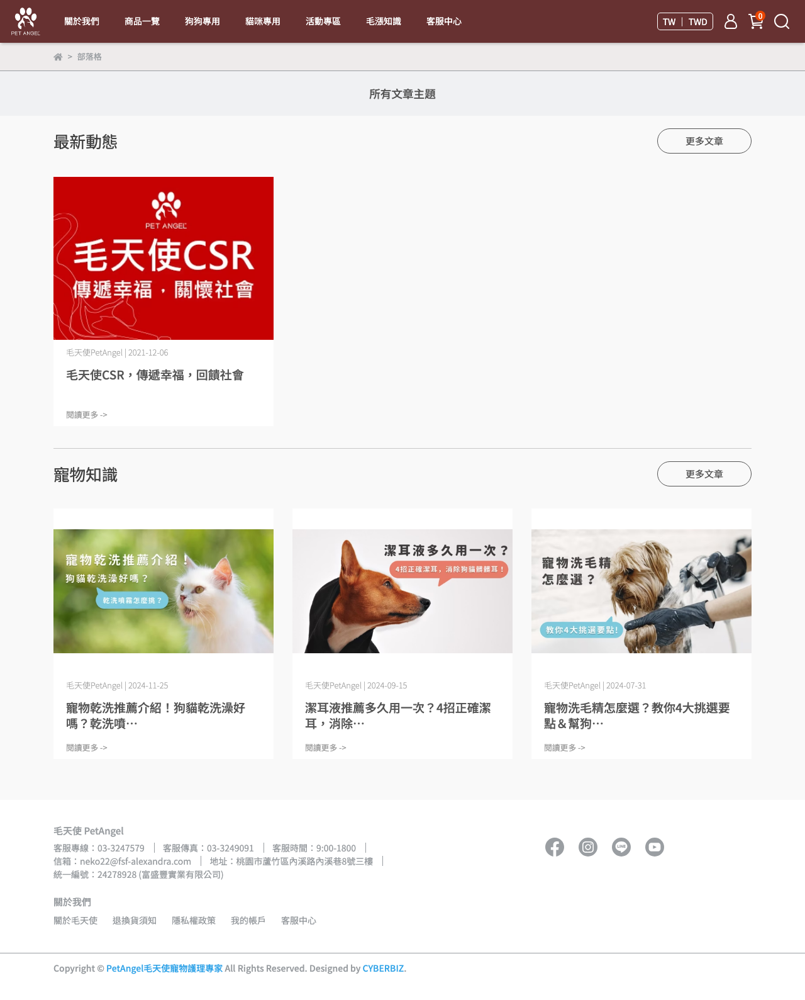

PETANGEL OFFICIAL SITE REVIEW
PetAngel 毛天使官網
全站分析與HTML 圖文簡報
從 首頁敘事、品類架構、品牌承諾、安全認證、內容 SEO 到 轉換動線，完整拆解 www.petangel.com.tw 目前對外的品牌表現。
網站：petangel.com.tw分析日期：2026-05-16定位：天然有機寵物護理品牌官網
防蚤驅蟲洗護洗毛除臭抑菌精緻保養免水洗清潔
從 首頁敘事、品類架構、品牌承諾、安全認證、內容 SEO 到 轉換動線，完整拆解 www.petangel.com.tw 目前對外的品牌表現。
品牌語氣一致，首頁直接把「低敏植萃、成分透明、第三方檢驗、MIT 工廠」一口氣講出來。
防蚤驅蟲 明顯是最重的主力賽道，已經有單品、補充瓶、套組、季節型組合。
讓分類頁與商品頁更完整承接「情境導購」，把內容閱讀者更自然帶去購買。

一開始就不是硬推單品，而是先用「依需求快速選購」把人帶入情境，再講品牌怎麼理解毛孩與家庭空間。
不是醫療感或工廠感，而是以「懂毛孩，也懂你對家的挑剔」做切入，這很適合毛孩家庭客群。
首頁直接搭配「外出散步首選、好康超值組合、鐵粉囤貨必買」等選購引導，商業導向很明確。
防蚤驅蟲、天然洗護、除臭抑菌、精緻保養、免水洗清潔、套裝組合、狗狗 / 貓咪分流。
關於毛天使、安全認證、有機嚴選、社群推薦、客服資訊，幫品牌補齊「為什麼可信」。
透過毛漲知識與寵物知識文章，把乾洗、潔耳、洗毛、除臭等需求轉成搜尋與教育入口。
這很重要，因為它代表毛天使不只是「有做驅蟲」，而是以驅蟲防護作為最強的營收與記憶點主軸，其他類別則往洗護、除臭、日常照護延伸。
首頁主推就是升級版防護噴霧，並往 4 入組、6 入組、補充瓶、夏日套組、防蚊凝膠一路展開。
像散步、旅行、夏天蚊蟲季、多毛孩家庭、囤貨補充，都是可直接拆成廣告和內容的題材。
這條線值得單獨拉成「明星系列專區」，把使用時機、搭配組合、實測回饋一起做厚。


品牌故事明講：純粹天然、只給毛孩最好的，而且補上長期使用、安全標準與環境友善，不是只有情緒訴求。
ISO 22716、ISO 9001、ECOCERT、USDA、有害物排除、產品責任險，這些都在加強信任厚度。
毛天使雖然是 C 端品牌站，但其實背後一直能隱約看出富盛豐的研發與製造底盤，這是很珍貴的差異化優勢。
把成分風險與國際資料庫概念講給消費者聽，強化「成分把關」認知。
建立成分說明書邏輯，把原料來源與用途公開化。
補上 KOL / 飼主使用情境，降低第一次購買的陌生感。
電話、信箱、地址與公司資訊完整公開，增加真實品牌感。
毛天使現在其實很接近「天然寵物護理知識品牌 + 商品品牌」的方向，這比只有促銷型商城更有長期價值。

部落格主題集中在乾洗、潔耳、洗毛、除臭、口臭等高需求問題詞，本身就具搜尋潛力。
毛孩用品不像快消零食，很多飼主會先查知識再決定要不要買，所以文章能直接承接轉換。
每篇文章可更明確加入相關商品區塊、系列導覽與 FAQ，把內容流量收回商品頁。

天然、低敏、透明、友善家庭空間，整站語氣沒有跑掉。
防蚤驅蟲系列已形成非常明確的主力記憶點。
品牌故事、EWG、有機嚴選、社群推薦與客服頁都在補信任。
知識文章題目有需求、有搜尋量，也能直接連到商品需求。
從防護、洗護到環境整理與精緻保養，毛天使已經具備繼續往「完整毛孩家庭照護品牌」擴大的空間。
首頁有「依需求快速選購」，但分類頁還可以更完整接住「戶外防護 / 居家除臭 / 日常洗護 / 局部護理」。
目前內容與商品都有，但還能做得更像一條完整漏斗。
防蚤驅蟲線應該有自己的品牌型 landing page，而不只是集合頁。
把 EWG、透明成分、MIT、第三方檢驗更早放進首頁與商品購買區附近。
把安心標準、主力系列與情境導購再前置，強化第一屏說服力。
為防蚤驅蟲系列補一頁完整 landing page，整合賣點、組合、FAQ、回饋。
每篇知識文補推薦商品與延伸閱讀，讓教育流量回到轉換頁。
把狗狗、貓咪、多毛孩家庭、新手飼主做成更清楚的入口頁。
天然低敏、成分透明、友善環境與安全把關，價值主軸清楚。
防蚤驅蟲線已是清楚主力，其它品類則形成延伸回購結構。
只要把情境頁、明星系列頁與內容導購再做厚，整站說服力還會明顯上升。
內部提醒：本簡報之對外路徑、下載位置與內部整理入口不直接展示於頁面中；如需存取，請由內部指定管理窗口統一控管。
資料來源：petangel.com.tw 首頁、關於毛天使、安全認證、有機嚴選、社群推薦、blogs、contact 與 zh-TW sitemap.xml。